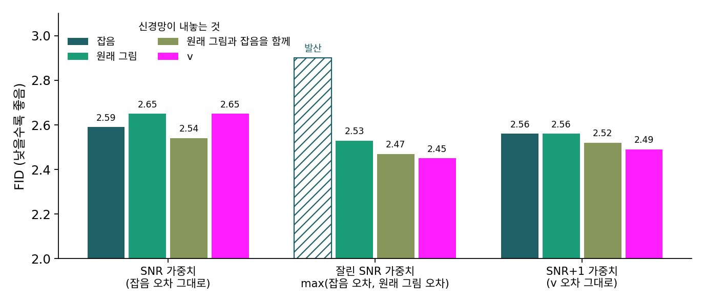
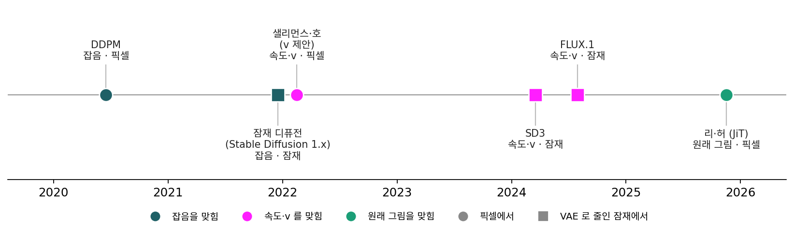

출력 꼴 고르기: 잡음에서 출발해 그림으로 돌아온 길
나선 장난감에서는 한 번에 내놓는 수가 폭에 가까워지자 원래 그림 예측만 버텼다. 그림이 좁은 면 근처에 모여 있다는 생각도 새로운 것이 아니다. 그런데 2020년의 DDPM 은 잡음을 맞혔고, 그 뒤의 잠재 디퓨전은 잡음 맞히기를 VAE 로 줄인 공간으로 옮겼으며, 그 뒤의 큰 모델들은 줄인 공간에서 속도를 맞혔다. 큰 모델이 원래 그림으로 돌아온 것은 2025년의 일이다. 원래 그림이 더 쉬운 과녁이라면 왜 이렇게 멀리 돌아왔을까?
역사: 잡음에서 잠재로, 다시 그림으로
2021년 말 롬바흐(Robin Rombach)와 동료들은 픽셀에서 일하는 디퓨전 모델이 「눈에 띄지 않는 세부를 모델링하는 데 지나친 용량을 쓴다」고 보았다. 앞선 보고대로라면 가장 강한 디퓨전 모델은 학습에 V100 그래픽 카드 150~1000일이 들었다. 그들은 미리 학습해 둔 오토인코더로 그림을 가로세로 몇 분의 1로 줄인 잠재 공간에서 디퓨전을 돌렸고, 손실은 잡음 맞히기 그대로 두었다. 이 방법이 Stable Diffusion 이 되었다.
2022년 2월에는 v 가 나왔다. 샐리먼스와 호는 걸음 수를 줄이는 증류(여러 걸음 모델이 간 곳을 적은 걸음 모델이 흉내 내도록 배우기)에서도 무너지지 않는 출력 꼴을 찾다가, 잡음과 원래 그림을 섞은 v 를 내놓았다. 그리고 출력 꼴과 손실의 가중치를 따로 떼어 견주었다. 신경망이 내놓는 것 넷(원래 그림, 잡음, 둘을 함께, 둘을 섞은 v)에, 원래 그림 오차에 곱하는 가중치 셋을 짝지은 열두 칸이다. 가중치의 이름에 붙은 SNR 은 신호 대 잡음비 α²/σ², 곧 남은 그림의 크기 제곱을 섞인 잡음의 크기 제곱으로 나눈 값이다. 잡음 예측에 「잘린 SNR」 가중치를 짝지은 칸만 학습이 발산했고, 나머지 열한 칸은 FID 2.45~2.65로 고만고만했다. 논문은 「출력 꼴과 가중치를 바꿔도 결과가 꽤 비슷하다. v 가 가장 안정하고, 이 실험에서는 원래 그림을 바로 맞히는 쪽이 조금 더 좋았다」고 적었다. 이 표의 세 가중치 가운데 어느 것도 DDPM 코드처럼 원래 그림 오차를 모든 잡음 수준에서 그대로 재지는 않았다.

2024년의 SD3 와 FLUX.1 도 줄인 공간에서 일하되, 맞히는 것을 직선 길의 속도로 바꿨다. ComfyUI 는 두 모델의 출력을 모두 속도로 읽는다(코드의 CONST).
2025년 11월 MIT 의 리(Tianhong Li)와 허(Kaiming He)는 「잡음 제거 생성 모델이 잡음을 제거하게 하자(Back to Basics: Let Denoising Generative Models Denoise)」라는 논문에서 압축기 없이 픽셀 그림을 큰 조각으로 잘라 넣는 신경망을 만들고, 출력 꼴만 바꿔 견주었다. 조각 하나에 든 수가 신경망의 폭에 닿는 설정에서 잡음과 속도를 내놓는 신경망은 크게 무너졌고, 원래 그림을 내놓는 신경망만 버텼다. 논문은 그 까닭으로 매니폴드 가설을 들었다. 다만 실험은 분류 라벨을 조건으로 한 ImageNet 뿐이고, 글로 그림을 만드는 실험은 아직 없다.

그림의 왼쪽 끝(DDPM)과 오른쪽 끝(리·허)은 둘 다 픽셀에서 일한다. 그런데 하나는 잡음을, 하나는 원래 그림을 골랐다. 나선 장난감이 맞다면 DDPM 은 왜 원래 그림의 이점을 보지 못했을까? 그리고 그 사이의 잠재 모델들은 원래 그림으로 바꿨어야 했을까?
ML에서: 지금 쓰이는 모델들의 출력 꼴
ComfyUI 가 모델마다 정해 둔 출력 꼴을 보면 이 흐름이 그대로 남아 있다. Stable Diffusion 1.x 는 잡음(EPS), Stable Diffusion 2.x 는 모델에 따라 잡음이나 v, SD3 와 FLUX.1 은 직선 길의 속도(CONST)로 읽는다. 압축기 없이 픽셀에서 바로 그림을 만드는 Chroma Radiance 의 한 판과 HiDream-O1 은 원래 그림을 내놓고, 그것을 샘플러가 쓰는 속도로 바꿔 넘긴다. 학습이 끝난 모델의 출력 꼴은 가중치에 박혀 있어서, 쓰는 사람은 바꿀 수 없고 맞춰 읽을 뿐이다.
문제 7. 가구를 분해할까
이삿짐 업체 두 곳이 있다. 갑은 가구를 늘 통째로 나른다(한 개에 10분). 을은 늘 분해해서 나른 뒤 다시 조립한다(한 개에 25분). 옮길 가구는 폭 85 cm 소파 3개와 폭 80 cm 장롱 2개다. (가) 현관문 폭이 90 cm 인 집에서는 어느 업체가 빠른가? (나) 문 폭이 75 cm 인 집에서는? (다) 문 폭이 90 cm 인 집만 다녀 본 사람에게 을의 방식은 어떻게 보이겠는가?

(가)는 갑이 50분, 을이 125분이니 갑이요. 분해는 시간만 잡아먹네요.

(나)는 갑이 소파도 장롱도 못 들여. 을만 125분에 끝내고.

그럼 어느 업체가 더 나은 업체예요?

문 폭에 따라 달라요. 문이 넓으면 갑, 좁으면 을밖에 안 돼요. (다)는… 넓은 집만 다닌 사람은 「을은 괜히 75분을 더 쓴다」고 하겠네요.

나선 장난감에서 문은 무엇이었고, 가구는 무엇이었죠?

문은 신경망의 폭, 가구의 폭은 한 번에 내놓는 수예요. 잡음은 통째로 날라야 하는 짐이고, 원래 그림은 좁은 평면 위에 있어서 접어서 나를 수 있는 짐이에요. 한 번에 내놓는 수가 2일 때 평면 위 모양에서 원래 그림 예측이 속도 예측보다 뒤졌던 것(조각 바서슈타인 0.184 대 0.070)이 을의 75분이었던 셈이고요.
문제 8. U-Net 에도 벽이 있었나
DDPM 이 CIFAR-10 에 쓴 U-Net 은 가장 고운 단계에서 칸마다 수 128개를 들고 있다가, 마지막 3 × 3 합성곱으로 칸마다 수 3개(빨강·초록·파랑)를 내놓는다. Stable Diffusion 1.x 의 U-Net 은 칸마다 수 320개에서 잠재 칸마다 4개를 내놓는다. (가) 두 신경망에서 칸 하나가 내놓는 수를 그 칸이 들고 있던 수로 나누면? (나) DDPM 의 U-Net 을 고쳐, 가로세로를 줄인 단계의 칸 하나(수 128개)가 선형 층 하나로 원래 그림의 8 × 8픽셀 조각을 한꺼번에 내놓게 하면 그 칸이 내놓는 수는 몇 개인가? 16 × 16픽셀 조각이면? 이 신경망에 속도를 맞히게 하면, 256 × 256 그림에서 수 하나당 속도 손실은 얼마 아래로 내려갈 수 없는가? (다) DDPM 과 잠재 디퓨전이 원래 그림 예측의 쓸모를 보지 못한 까닭을 말하라.
(가)는 3/128 = 0.023, 4/320 = 0.0125요. 둘 다 50분의 1도 안 돼요.
나선 장난감에서 그 비가 얼마쯤일 때 잡음 예측이 흔들리기 시작했죠?
폭 256에 한 번에 16개, 곧 16분의 1에서 잡음 예측의 손실이 5.13으로 다른 둘(3쯤)보다 커지기 시작했고, 4분의 1인 64에서는 열 배가 넘었어요. 50분의 1이면 그보다 세 배 넉넉하고, 셋이 거의 같던 2개 줄(128분의 1) 쪽에 가까워요.

(나)는 8 × 8 × 3 = 192개를 128개짜리 칸에서 선형 층 하나로 내니까, 출력이 128차원의 평평한 곳에 갇혀요. 문제 5에서 본 벽대로면 조각마다 192 − 128 = 64개 방향은 못 맞히고, 그 방향마다 잡음의 분산 1씩 오차가 남아요. 256 × 256 그림이면 조각이 32 × 32 = 1,024개라 바닥이 65,536이고, 그림의 수 196,608개로 나누면 수 하나당 0.33이에요. 16 × 16이면 조각 하나에 768개, 768 − 128 = 640이 남고 조각 256개라 163,840, 수 하나당 0.83이요.

(다)는 문이 넓은 집만 다닌 거야. 칸마다 내놓는 수가 폭보다 훨씬 적으니 잡음을 통째로 날라도 막히지 않았어. 그러면 남는 차이는 배점뿐이고, 원래 그림의 가중치 없는 오차는 옅은 잡음을 거의 안 봤으니 잡음 예측이 이긴 거지.
잠재로 옮긴 뒤에는 칸 하나가 수 4개뿐이라 벽은 더 멀어졌어요. 잠재로 간 까닭은 벽이 아니라 계산과 눈에 띄지 않는 세부였고요. 벽은 누군가 칸 하나에 수백 개를 한꺼번에 맡기는 신경망을 지을 때 다시 나타나요.
단톡방에 공지를 한 줄씩 보낼 때는 글자 수 제한이 있는 줄도 몰랐는데, 긴 공지를 한 번에 보내니까 잘리는 거랑 같네요.
문제 9. 벽이 없는 곳에서도 원래 그림을?
나선 장난감(폭 256)에서 한 번에 내놓는 수가 2와 16일 때 결과는 이렇다. 시험 속도 손실(원래 그림 / 잡음 / 속도 예측): 2에서 2.86 / 2.94 / 2.78, 16에서 3.08 / 5.13 / 3.04. 만든 점과 참 나선의 조각 바서슈타인 거리: 2에서 0.184 / 0.195 / 0.070, 16에서 0.119 / 0.195 / 0.099. 잠재 칸 하나가 수 16개를 내놓고 폭이 3,072인 모델을 만든다. 동료가 「매니폴드 가설에 따르면 원래 그림이 더 쉬우니 원래 그림 예측으로 학습하자」고 한다. 어떻게 답하겠는가?
동료 말이 맞죠. 원래 그림이 더 쉽다는 건 장난감에서 확인했잖아요.
수 16개를 폭 3,072로 내놓으면 비가 얼마예요? 장난감의 어느 줄과 닮았어요?
0.005요. 2개를 내놓던 줄(256분의 2, 0.008)보다도 작아요. 거기서는 손실이 셋 다 비슷하고, 만든 점은 속도 예측이 0.070으로 제일 좋아요. 원래 그림 예측은 0.184로 두 배 넘게 나빠요.

16개 줄에서는 원래 그림 0.119, 속도 0.099로 거의 붙었어. 잡음은 이미 0.195로 뒤처졌고. 그러니까 문에 가까워질수록 원래 그림의 몫이 커지고, 문이 아주 넓으면 오히려 조금 손해네.

벽이 없는 곳에서 세 꼴을 가르는 건 무엇이었죠?
배점이요. 그럼 동료에게는 「이 모델에는 벽이 없으니 매니폴드 가설로 정할 일이 아니고, 손실을 어느 공간에서 재고 어느 잡음 수준을 무겁게 볼지로 정할 일」이라고 해야겠어요. 원래 그림 예측의 큰 이점은 문이 좁을 때 나오니까요.

잠재에서 일한 모델들이 잡음이나 속도로도 별 탈이 없었고, 픽셀을 큰 조각으로 넣는 모델이 원래 그림으로 돌아간 게 그래서였네요.
그래요. 무엇을 맞히게 할지는 「무엇이 더 쉬운가」 한 줄로 정해지지 않아요. 한 번에 내놓는 수와 폭의 비가 벽을 정하고, 손실을 재는 공간이 배점을 정해요.